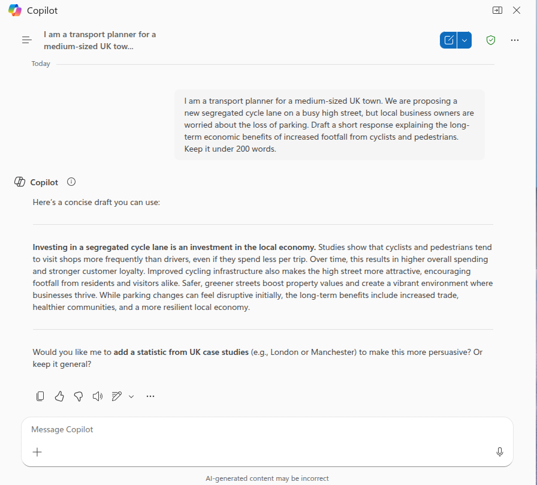

Session 1: Foundations of AI in Transport
1 Overview
This session lays the groundwork for the course.
2 Slides and Presentation (45 mins)
The first half of the session will be delivered as a presentation. See the slides for details. The aim of the presentation is to demystify artificial intelligence, specifically focusing on the tools transforming transport planning today, and establish a framework for using them effectively and ethically.
It will also provide a chance for debate: questions are encouraged!
A summary of core concepts covered in the presentation can be found below (click to expand):
Click to expand core concepts from the presentation
2.1 Demystifying AI & LLMs
We focus on Large Language Models (LLMs). Think of an LLM not as a “truth machine,” but as a highly advanced predictive text engine. It has analyzed vast amounts of text to understand patterns. When prompted, it predicts the most plausible next words. This allows it to reason, draft text, and even write code, but it requires human oversight to check facts.
2.2 Types of AI Tools
It is important to distinguish between the tools we will use:
- Web-based Chatbots (e.g. ChatGPT): Best for generating text, summarizing reports, and brainstorming ideas.
- Tools that integrate with your existing workflows (e.g., GitHub Copilot): Integrated into software (like VS Code, which is used in the GitHub Codespaces environment many of you will be using for this course) to write and debug code. We will focus on these in Session 2.
M365 Copilot is half-way between these two, you can use it to work on your documents, emails, and spreadsheets, but is often used as a chat interface and (in my experience) its outputs are often just given in the chat interface telling you what to do rather than doing it for you.
2.3 The Data Science Framework
AI is most effective when integrated into a reproducible data science workflow:
- Reproducibility: Moving away from ad-hoc Excel spreadsheets to scripted workflows (R/Python).
- Scalability: Automating tasks to run on 100 files as easily as one.
- Transparency: Code allows others to audit your methodology.
2.4 Ethical Considerations
- Bias: AI models reflect the biases in their training data.
- “Hallucinations”: Models can confidently state falsehoods.
- Data Privacy: Never input sensitive personal data (GDPR) or confidential internal documents into public AI models.
3 Quick Start: Try it Now (5 minutes)
Before diving into the theory, let’s see AI in action using a standard Large Language Model (LLM).
- Open a free AI chat tool like Microsoft 365 Copilot, ChatGPT, Claude, or Gemini.
- Copy and paste the following prompt:
“I am a transport planner for a medium-sized UK town. We are proposing a new segregated cycle lane on a busy high street, but local business owners are worried about the loss of parking. Draft a short response explaining the long-term economic benefits of increased footfall from cyclists and pedestrians. Keep it under 200 words.”
- Critique the result. It won’t be perfect, but it acts as a powerful accelerator for your expertise.
Example output from Microsoft 365 Copilot

4 Identifying tasks where AI can help (40 mins)
We will now apply these concepts to your daily work.
1. Individual Task: Workflow Mapping (10 mins)
- Draw a simple flowchart of a routine task you perform (e.g., replying to consultation emails, cleaning traffic count data).
- You can use pen and paper, or we recommend Excalidraw for quickly creating digital sketches.
- Mark the steps where AI could act as an “assistant” to speed up the process.
2. Small Group Strategy (15 mins)
- In groups of 3-4, share your flowcharts.
- Discuss: Which task is the “low hanging fruit”? Which is too complex or risky for AI?
3. Feedback & Discussion (15 mins)
- We will share the most promising use-cases with the room.